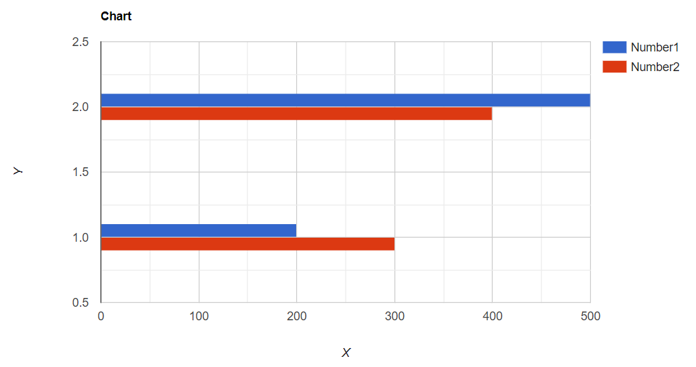

To make a Simple Bar Chart with
pyhtmlchart. Follow the given code below:
import pyhtmlchart as chart
bar_chart = chart.bar_chart.BarChart(location='bar', title='Chart')
columns = ['Time', 'Number1', 'Number2']
all_data = [[1, 200, 300], [2, 500, 400]]
bar_chart.add_data(data=all_data, data_titles=columns)
bar_chart.open()
The above code will open the following chart in the browser:

Explanation:
- The First line imports the library.
- The Second line creates a chart object from the chart.bar_chart.BarChartclass already defined in the library!
- The Third line is a columns list which contains all the columns to be added to the chart. Take a note that the first item in the list will be used for X axis of the chart.
- The Fourth line is a nested list data which contains all the data. Make sure that the list should be nested and contain the data to be added. Also the length of the columns should be equal to the length of a list in the nested data list as given in the above code.
- The Fifth line is to add the data to the chart where data= the data to be added and data_titles= the columns to be added.
- The Sixth line is to open the saved chart automatically. If the chart is not opened then go to the given save location and open it.
The BarChart Class:
Parameters:
The bar chart class is the class to make a bar chart. It contains following parameters:
- location :- The location of the chart to be saved.
- title :- The title of the chart.
- background_color :- The background color of the chart.
- legend_position :- The legend position of the chart. It's values can be 'top', 'bottom', 'right'
- width :- The width of the chart.
- height :- The height to the chart.
- chart_actions :- Chart Actions such as pan and zoom. Set it to True if you want chart actions.
- y_axis_title :- The title of the Y axis of the chart.
- x_axis_title :- The title of the X axis of the chart.
- color :- The list of all colors to be added in the chart.
- bar_width :- The width of the bar in bar chart.
- print_log :- Set it to True if you want the chart log to be printed out.
Functions:
add_data(data, data_titles) :-
The function to add the data to the chart. Check the above code to understand it.
enable_auto_update(time=5000) :-
The function to enable the auto update to the chart. Give the time parameter an 'int' value in milliseconds.
disable_auto_update() :-
The function to disable auto update to the chart.
update_data(data, append=False, wait=True) :-
The function to update the given data. Give the data parameter the nested list to be added. Set append to True if you want the data to append and set wait to True if you want the program to wait for the update time and then update the data.
open() :-
The function to automatically open the chart in the browser.
print_chart_settings() :-
The function to print the chart settings.
Making a simple auto update chart:
Following is a simple code that auto updates a chart using random values:
import pyhtmlchart as chart
import random
bar_chart = chart.bar_chart.BarChart(location='bar', title='Chart')
columns = ['Time', 'Number1', 'Number2']
all_data = [[1, 200, 300], [2, 500, 400]]
bar_chart.add_data(data=all_data, data_titles=columns)
bar_chart.enable_auto_update(time=5000)
bar_chart.open()
i = 3
while True:
data = [i, random.randint(1, 1000), random.randint(1, 1000)]
bar_chart.update_data(data=[data], append=True)
i += 1